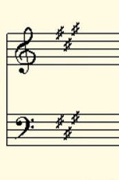
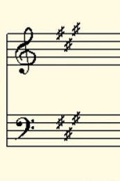
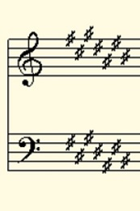
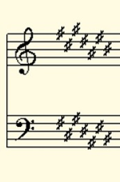

A or F#m


F or Dm
Ab or Fm

E or C#m
C# or A#m


Cb or Abm
Easy enough? Now, let's put that knowledge to the test! Give these staffs a look and take a guess what key the song is in. Once you made your guess, hover your cursor or tap inside the empty box above the image.
GOOD LUCK!